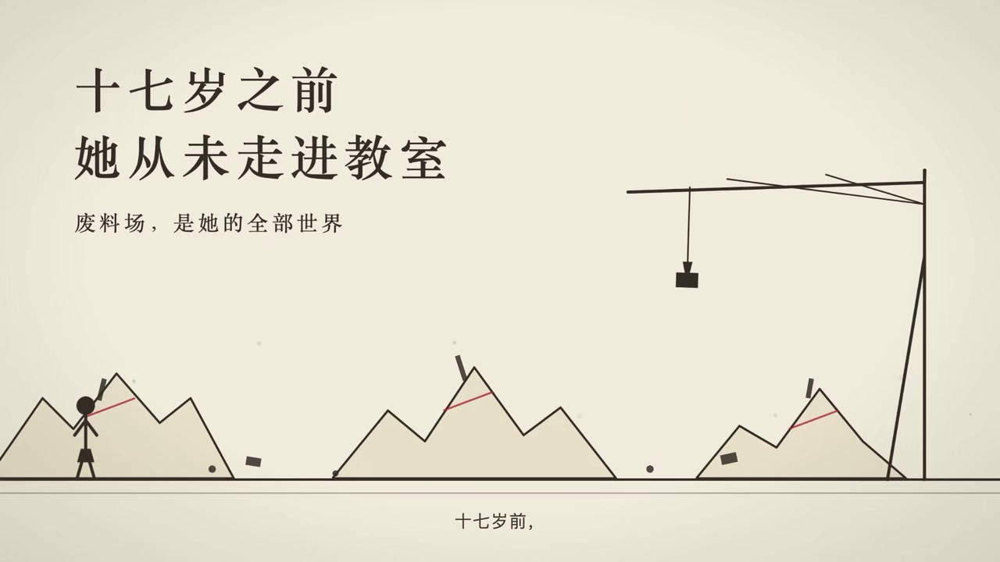
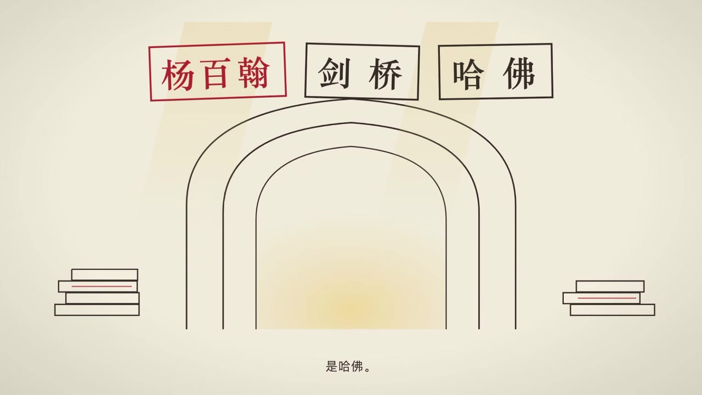
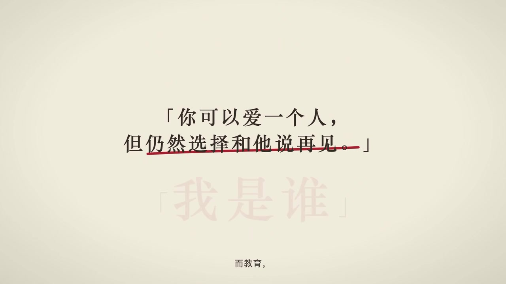

壹
选题
为什么选《你当像鸟飞往你的山》
本书是美国作家塔拉·韦斯特弗（Tara Westover）的回忆录，英文原名 Educated（中文版 2019 年出版）。塔拉出生在爱达荷州的摩门教原教旨主义家庭，17 岁前从未踏进教室，靠自学考入杨百翰大学，最终成为剑桥大学历史学博士。这是一个"教育如何重塑一个人"的真实故事。
- 主题当代性强：教育与原生家庭、自我认同与亲情撕裂，是年轻人广泛共鸣的话题；
- 画面感好：废料场的起重机、巴克峰的雪、剑桥的图书馆，天然适合视频化呈现；
- 书名自带意象："你当像鸟飞往你的山"出自《圣经·诗篇》"Flee as a bird to your mountain"，飞鸟与山为美术创作提供了直接素材。
最终视频正片已完成，以下策划、文案、素材均为对成片的过程复盘。
贰
策划
视频定位（成片实际情况）
- 形式：75 秒横屏动效解说视频——不是"剪素材"，而是把整本书"画"成一镜到底的插图动画；
- 视觉基因：完全复刻中文版封面——奶油纸底、竖立的红色铅笔、火柴人、红色印章，全片只在此体系内做变化；
- 叙事策略：以"封面"为悬念开场（你见过这样的封面吗？），按"童年 → 出走 → 求学 → 觉醒 → 回到封面"推进，首尾呼应；
- 配音字幕：安静旁白 + 底部小字字幕逐句同步，金句以大字号特殊版式呈现。
分镜结构（成片六幕）
| 段落 | 内容 | 画面（成片截帧见下方"素材"） |
|---|---|---|
| ① 封面开场（0:00–0:10） | 悬念提问：你见过这样的封面吗？山顶站着一个小小的剪影 | 竖立的红铅笔，笔尖成峰，小人立于峰顶，标题浮现 |
| ② 废料场的童年（0:10–0:30） | 十七岁之前从未走进教室，废料场是全部世界 | 火柴人塔拉、废料场起重机，红章"不上学·不就医" |
| ③ 一盘磁带（0:30–0:40） | 哥哥泰勒留下的磁带："外面有个世界" | 磁带特写，红铅笔沿虚线游走 |
| ④ 大学之门（0:40–0:55） | 考入杨百翰，一路剑桥；教育的代价，是看见 | 大学拱门，印章依次盖下"杨百翰→剑桥→哈佛" |
| ⑤ 金句·我是谁（0:55–1:05） | "你可以爱一个人，但仍然选择和他说再见" | 大字金句，删除线划过，红字"我是谁"压轴 |
| ⑥ 书封收尾（1:05–1:15） | 那座山，是灵魂落脚的地方 | 回到书封：标题、作者、《纽约时报》No.1、比尔·盖茨荐书 |
叁
文案
解说词全文（依据成片字幕逐句还原 · 约 300 字 / 75 秒）
【① 封面开场】
你见过这样的封面吗？
一支铅笔，笔尖是一座山峰。山顶站着一个小小的剪影——
【② 废料场的童年】
这个女孩叫塔拉。
十七岁之前，她从未走进教室。
废料场，是她的全部世界。
不上学，不就医——她的一切，由废料场的废铜烂铁铸成。
【③ 一盘磁带】
哥哥泰勒留下了一盘磁带。
外面有个世界。
于是她像削铅笔一样，把自己，从大山的故事里削出来。
【④ 大学之门】
她考入杨百翰大学，一路走向剑桥。
教育的代价，是看见——
教育的代价，是看见。
【⑤ 金句 · 我是谁】
「你可以爱一个人，但仍然选择和他说再见。」
而教育给她的答案，就是夺回「我是谁」的定义权。
【⑥ 书封收尾】
你当像鸟飞往你的山。
那座山，是灵魂落脚的地方。
设计说明：全片字幕与画面逐句同步，底部小字为旁白字幕，关键概念（"不上学·不就医""我是谁"）用红色印章 / 红色大字强调，与封面红色铅笔形成呼应。
肆
素材
创作思路：从书的封面出发
《你当像鸟飞往你的山》中文版封面最经典的元素是一支竖立的红色铅笔——笔即书写、即学习，也暗合"用一支笔改写命运"的主题。成片把封面直接"动画化"：铅笔笔尖化作山峰、小人立于峰顶，随后火柴人塔拉、红色印章、磁带、大学拱门等意象在同一个纸面世界里依次登场。网页的粉系配色同样取自成片画面。以下均为成片截帧。



全片色彩规范（取自视频封面元素）
奶油粉白
豆沙粉
铅笔红
深玫瑰棕
其他素材：全片画面均为按封面视觉基因绘制的矢量动效（红铅笔 / 火柴人 / 印章 / 拱门），旁白配音与底部字幕逐句对齐，音轨见 mp3/bgm.m4a，安静钢琴底。
伍
方法
制作流程
① 读原著定选题→
② 提炼封面视觉基因→
③ 撰写 75 秒解说词→
④ 逐场景绘制动效素材→
⑤ 旁白配音与字幕对齐→
⑥ 合成出片→
⑦ 封装为可复用技能→
⑧ 网页发布
关键方法说明
- 技能封装：把"名著解说视频"的完整流程（读名著 → 写解说词 → 绘制画面 → 配音 → 合成）封装成一个可复用的 WorkBuddy 技能，之后输入任意书名即可产出同风格的解说视频；
- 封面即分镜：开场与结尾都落在书封上，铅笔成峰、小人剪影——观众先"认识封面"，再"读懂封面"，首尾闭环；
- 文案与画面互锁：每句字幕对应一个独立场景（磁带、拱门、印章），旁白节奏决定画面切换节奏。
陆
工具
| 环节 | 工具 | 说明 |
|---|---|---|
| 整体工作流 | WorkBuddy（AI 助手） | 核心工具。将解说视频流程封装为技能，由其自主调度与选择各环节的生成模型 |
| 画面绘制 | AI 生成模型（WorkBuddy 自动选择） | 按封面视觉基因逐场景生成矢量动效画面 |
| 解说词撰写 | WorkBuddy 对话式写作 | 基于原著内容生成 75 秒六幕式解说文案 |
| 配音 / 字幕 | AI 配音模型 | 自动生成旁白，字幕逐句对齐时间轴 |
| 本站搭建 | HTML / CSS / JS + Nginx | 手写静态页面，本地 Nginx 测试后部署到 GitHub Pages |
柒
视频
《你当像鸟飞往你的山》名著解说视频 · 成片 ｜ 由 WorkBuddy "名著解说视频"技能生成。本页其余板块即为这条成片背后的制作过程复盘。
捌
总结
这次作业我学到了什么
- 从"会用工具"到"会封装工作流"：把一次性的视频制作沉淀为可复用的技能，是本次作业最大的收获——AI 的价值不止于单次生成，而在于把方法固化、让下一次更快更好；
- 提示词即导演：生成画面的质量取决于对视觉元素的约束。锚定封面的"山、鸟、铅笔质感"，全片风格才能统一；
- 内容为本：AI 能生成画面和配音，但打动人的仍是原著本身的力量与文案的结构，选题和策划决定视频的上限；
- 完整的发布链路：从本地 Nginx 测试到 GitHub Pages 部署、从仓库命名规范到静态站点上线，走通了一个网页作品从创作到发布的全过程。
最后，把书里的话送给大家："先找出你的能力所在，然后再决定你是谁。"